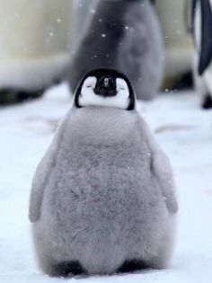

Überraschung für die beste Mama der Welt!
Weil du Pinguine so liebst...

Niedliche Fakten über Babypinguine:
- Babypinguine werden auch Küken genannt und sind mit einem weichen, flauschigen Daunenkleid bedeckt.
- Pinguin-Eltern wechseln sich beim Brüten der Eier ab, damit einer immer auf Nahrungssuche gehen kann.
- Babypinguine kuscheln gerne zusammen, um warm zu bleiben. Diese Gruppen nennt man "Kindergarten".
- Die meisten Babypinguine können erst schwimmen, wenn sie ihr Daunenkleid gegen wasserdichte Federn getauscht haben.
- Die Geräusche, die Babypinguine machen, helfen ihren Eltern, sie in großen Gruppen wiederzufinden.